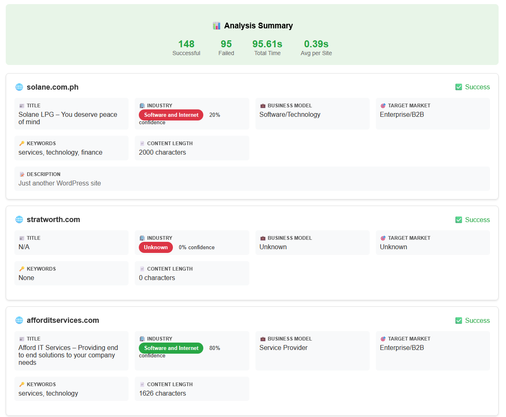
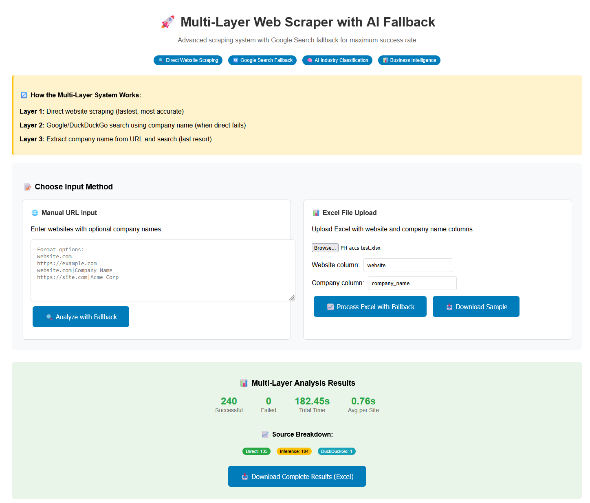
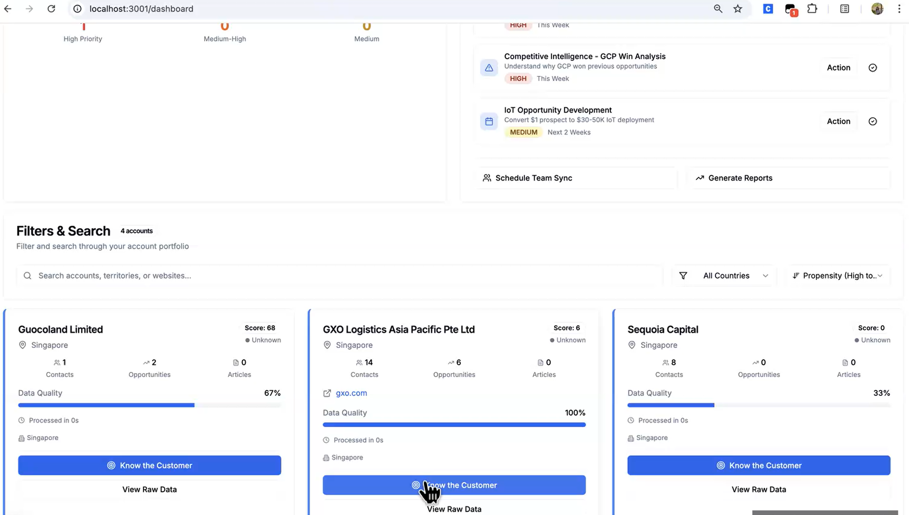
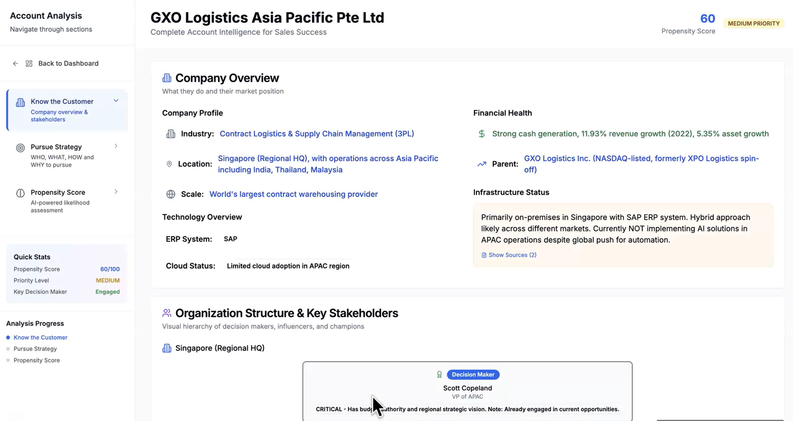
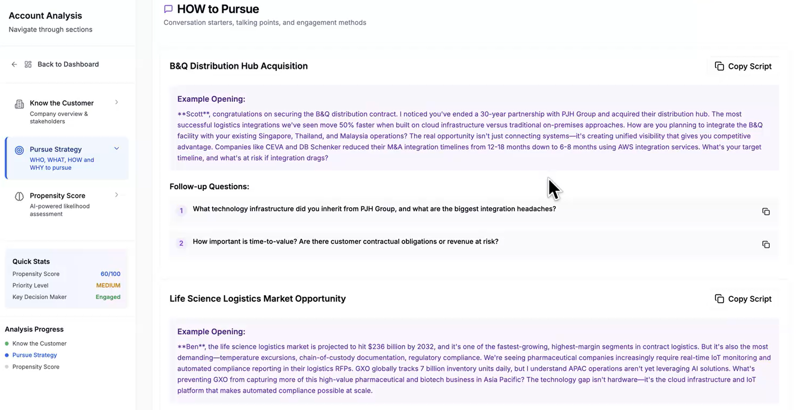

Signal Intelligence Dashboard for AWS Sales
A1. Problem Definition & Value Proposition
1.1 The Problem & Persona
Persona: Sarah Tan – Demand Generation RepresentativeFront-line outbound sales role responsible for identifying potential customers and booking qualified meetings for Account Executives, AWS (Singapore)
Sarah is a DGRDemand Generation Representative — outbound sales role focused on creating new pipeline responsible for identifying potential customers and booking qualified meetings for Account ExecutivesSenior sales professionals who close deals and manage customer relationships. Her performance is measured by sales-qualified meetingsMeetings that meet criteria for passing to Account Executives, involving qualified decision-makers with confirmed budget/timeline (SQMsSales-Qualified Meetings — meetings that meet specific criteria for passing to Account Executives) created weekly, directly feeding AWS's new business pipeline. Managing a portfolio of 1,200 SMBSmall and Medium Business — typically <500 employees, <$50M revenue accounts each representing potential cloud deals of US$10K–100K annually, her target is 10 qualified meetings per week.
DGRsDemand Generation Representatives — outbound sales roles focused on creating new pipeline operate under severe time constraints. Interviews with eight AWS sales representatives confirmed that only 12 of 40 weekly working hours are allocated to prospecting; the remainder is consumed by internal meetings, CRMCustomer Relationship Management — software for managing customer interactions and sales data (e.g. Salesforce) updates, and reporting. This leaves Sarah with a structural problem, not a motivational one:
- Time inefficiency: Manual research across four disconnected systems takes ~10 minutes per account, limiting her to 72 accounts per week — just 6–7% of her portfolio.
- Signal blindness: Prioritisation relies on static internal metrics (revenue tier, past spend, event attendance) rather than dynamic external buying signalsObservable indicators that a company may be ready to purchase a product/service (e.g., hiring, funding, leadership changes) such as hiring activity, funding rounds, or leadership changes.
The consequence is significant: approximately 45 high-intent accounts go undetected each week. At an average AWS SMB deal size of US$37,0001, this represents an estimated US$1.66M in unrealised annual pipeline per rep — and US$66M across a 40-rep team.
1.2 Current State: Four Disconnected Systems
Sarah's workflow requires navigating four separate tools to identify potential buying signals, each introducing friction and delay:
| Step | Purpose | Limitation |
|---|---|---|
| Salesforce (~2 min) | Account history, revenue tier | Reflects past activity rather than current intent |
| LinkedIn (~3 min) | Hiring trends, leadership changes | Signals often detected 5–7 days late |
| Google News (~3 min) | Funding announcements, partnerships | Requires manual synthesis |
| Internal Propensity ScoresAI-generated likelihood rankings that predict which accounts are most likely to buy based on past engagement or usage data (~2 min) | AI-generated readiness rankings | 40–50% false positives require manual validation |
Total research time: ~10 minutes per account
Portfolio coverage: ~7% of accounts analysed weekly
Prioritisation relies on lagging indicators such as revenue tier and past engagement, causing dormant accounts to appear high-value while companies demonstrating recent growth signals may not be surfaced in time. The effective engagement window for many buying signals is approximately 24–48 hours; manual weekly research cycles often result in outreach occurring too late to capture emerging opportunities2.
The fragmentation of internal and external intelligence creates a structural barrier to timely and consistent prospecting decisions.
1.3 Ideal State & Design Specifications
Analysis of the current workflow shows that the prospecting challenge is driven by structural limitations in how signals are accessed and interpreted, rather than lack of effort. Key constraints include fragmented data sources, reliance on lagging indicators, limited trust in opaque scoring models, and the short 24–48 hour window in which buying signals remain actionable.
In the ideal state, Sarah begins each day with a Signal Intelligence DashboardAI-powered interface that consolidates internal CRM data with real-time external signals to support account prioritisation that surfaces high-priority accounts, explains why each account is prioritised, and provides relevant context for outreach. Instead of manually consolidating information across multiple platforms, she is presented with a unified view combining internal CRM context with real-time external signals.
Design specifications translate observed workflow constraints into measurable improvements:
| Design Specification | Current Baseline | Target | % Improvement | Justification |
|---|---|---|---|---|
| Portfolio coverage | 7% (~72 accounts/week) | 60–80% | +757% to +1043% | Automated monitoring scales research across portfolio |
| Research time per account | 10 minutes | 30–60 seconds | −90% to −95% | Unified signal view reduces manual verification |
| Meeting conversion rate | 5% | 15–20% | +200% to +300% | Higher-intent outreach improves relevance |
| Signal detection rate | ~25% | 75–85% | +200% to +240% | Real-time signals surface earlier indicators |
Overall Impact
The design increases effective prospecting capacity by approximately 8–10× while improving confidence in prioritisation decisions.
1.4 Solution Overview
The Signal Intelligence Dashboard integrates multiple data sources into a single decision-support interface that enables representatives to identify and act on buying signals more efficiently.

Figure 1: Signal Intelligence Dashboard Interface — Click to zoom
The system continuously monitors a defined account portfolio and highlights companies demonstrating observable indicators of potential demand, such as hiring growth, funding activity, expansion signals, or increased digital presence. Each prioritisation recommendation is supported by visible evidence, allowing representatives to understand why an account is surfaced.
Rather than replacing human judgement, the system augments it by structuring relevant intelligence into a format aligned with existing prospecting workflows.
Four core capabilities define the solution:
1. Internal–external signal integration
Internal CRM indicators such as account tier, historical engagement, and pipeline activity are combined with external signals reflecting recent organisational developments. This allows prioritisation decisions to reflect both relationship context and current business momentum.
2. Unified signal visibility
External signals from multiple public sources are consolidated into a single account-level view, reducing the need to manually search across platforms such as LinkedIn, company websites, and news sources.
3. Explainable prioritisation with verifiable sources
Observable signals contributing to each recommendation are displayed together with short summaries and cited sources, enabling representatives to quickly verify relevance without additional research.
4. Workflow-aligned output structure
Insights are presented in a format consistent with existing CRM workflows, allowing representatives to incorporate signal-based intelligence without significantly changing established prospecting routines.
The solution shifts prospecting from a static account review process into a continuously updated prioritisation workflow informed by real-time market signals.
1.5 Value Proposition: Improving Allocation of Sales Effort
The primary value of the Signal Intelligence Dashboard lies in helping sales representatives allocate limited time towards accounts most likely to convert, by identifying higher-intent opportunities earlier and more consistently across large portfolios.
By combining internal CRM engagement context with real-time external signals, the system identifies accounts demonstrating observable indicators of potential demand, allowing outreach effort to be directed towards opportunities with higher intent.
The value created can be understood across three levels:
Operational value
Increases portfolio coverage within the same time constraint, reducing missed opportunities.
Decision value
Provides prioritisation rationale with cited sources, allowing representatives to quickly verify signals without manual cross-checking, supporting faster and more confident prospecting decisions.
Strategic value
Engaging accounts when there are observable signs of interest increases likelihood of conversion and improves probability of achieving sales targets.
A2. Industry Context
2.1 Industry Context
In today's digitally connected environment, sales data is abundant but fragmented across multiple platforms. Advances in AI and large language modelsAI models trained on vast text data to understand and generate human language (e.g. Claude, GPT) now make it technically feasible to synthesise these signals into structured insights, enabling intent-driven selling at scale.
GartnerLeading technology research and advisory firm (2024) projects that 75% of B2B organisations will adopt AI-guided selling workflows by 2025. However, leading commercial platforms such as ZoomInfoCommercial B2B intelligence platform providing company and contact data — primarily optimised for North American markets and 6senseCommercial intent data platform using AI to predict buying behaviour — limited ASEAN coverage are primarily optimised for North American markets, offering limited coverage of ASEAN SMBs while operating at price points that are difficult to justify for large-scale prospecting portfolios. Internal scoring models address cost constraints but often lack transparency, resulting in low trust and frequent manual verification.
Together, these limitations create a gap between the availability of external buying signals and the ability of sales representatives to confidently act on them within time-constrained workflows.
Internal Validation
Interviews with 8 AWS representatives (3 Scale, 3 Enterprise, 2 Nurture) confirmed: (1) 7% portfolio coverage due to 10-min research time, (2) 6/8 reps manually revalidate AI scores (40–50% false positives), (3) desire for explainable reasoning with citations. (See Appendix A for detailed findings.)
A3. Methodology / Concept Development
The methodology focused on translating key behavioural constraints identified in earlier sections — limited portfolio visibility, low trust in opaque scoring models, and fragmented external signals — into a coherent design approach.
Conceptual Orientation: Human-in-the-Loop Co-Pilot
Early concept exploration contrasted two design directions: full automation, where the system independently prioritises accounts, and a human-in-the-loopDesign approach where automation handles data processing while humans retain control over interpretation and decision-making co-pilot model that surfaces intelligence while preserving representative judgement.
The co-pilot model was selected as it directly addresses the trust gap identified in the research findings. Interview results showed that 6 of 8 representatives manually verify internally generated scores due to concerns about false positives. Increasing automation without improving transparency would therefore be unlikely to improve adoption.
Positioning the system as a decision-support tool allows signals to be surfaced with visible reasoning, while representatives remain responsible for interpreting relevance and determining outreach actions. This aligns with assisted intelligenceAI design principle where automation enhances human decision-making without replacing it principles, where automation enhances human decision-making without replacing it.
Approach Evaluation
Three technical approaches were evaluated against key project constraints: explainability requirements, absence of labelled training data, three-month development timeline, and a <$0.05 per-account cost constraint.
| Approach | Data Needs | Explainability | Feasibility | Selection |
|---|---|---|---|---|
| Rule-based filtering | None | Minimal contextual flexibility | Moderate | ❌ Insufficient nuance |
| Predictive machine learning | High (labelled data) | Low transparency | Low | ❌ No dataset available |
| Generative AIAI that creates new content (text, analysis, summaries) rather than classifying existing data synthesis | Low (zero-shotAI capability to perform tasks without requiring task-specific training data) | High (cited reasoning) | High | ✅ Selected |
Generative AI enables synthesis of fragmented external signals without requiring historical training datasets, while producing citation-supported reasoning that improves transparency and verifiability of prioritisation logic.
This supports the co-pilot design orientation by combining scalable signal aggregation with explainable outputs, allowing representatives to maintain contextual judgement while benefiting from increased visibility across large account portfolios.
A4. Prototype Evolution & System Design
4.1 Prototype Evolution
Between July and October 2024, three prototype iterations were developed to improve how external company signals could be reliably collected and synthesised into actionable sales intelligence. Each iteration tested a different research method, progressing from direct extraction to structured multi-source synthesis.
| Prototype | Tech Stack | Method | Key Limitation | Improvement |
|---|---|---|---|---|
| P1 | Selenium + ScrapingBee | Direct website scraping | Blocked by bot protection, unstable page structures | Established feasibility of automated signal collection |
| P2 | DuckDuckGo API + Claude 3.5Large language model by Anthropic, used for natural-language reasoning and synthesis | Search-based retrieval | General search results often stale and missing hiring signals | Improved reliability and reduced maintenance effort |
| P3 | PerplexityAI-powered search API that retrieves real-time information with cited sources + TavilySpecialised search API optimised for structured data retrieval including job postings + Claude 3.5 | Multi-source synthesis | Higher design complexity | Achieved high signal coverage with explainable outputs |
Click to view prototype screenshots

Prototype 1 — Early scraping-based approach

Prototype 2 — Search API-based approach
P1 → P2: From Direct Extraction to Search-Based Research
The first prototype attempted to extract information directly from company websites using Selenium and ScrapingBee. While websites contain rich company information, 36% deployed bot protection and 28% used dynamic page structures requiring constant maintenance (~5 hours per week). This made scraping operationally unstable.
The second prototype shifted to DuckDuckGo Search API, which retrieves publicly indexed information such as news articles and company mentions. This approach better reflects how human representatives conduct research and improved reliability to 73%, while significantly reducing maintenance requirements.
P2 → P3: From Single-Source Search to Specialised Research Agents
While search APIs improved stability, results were often cached (7–14 days delay), duplicated across sources, and inconsistent in capturing hiring signals from job platforms.
The final prototype adopted a multi-source approach using Perplexity API and Tavily API, supported by Claude 3.5. Instead of relying on one general search source, the system distributes research tasks across specialised "agents":
- Perplexity retrieves real-time company developments (e.g. funding, partnerships, product launches) with cited sources
- Tavily retrieves structured hiring signals from job postings
- Claude 3.5 synthesises signals into prioritised summaries with supporting citations
Final Prototype Results
The final architecture achieved a 96% signal retrieval success rate, average processing time of 48 seconds per account, and cost efficiency of approximately $0.032 per account. See Appendix D for the cost justification and operating assumptions. These results validate an API-first, multi-source synthesis approach capable of generating scalable and explainable account intelligence.
The prototype evolution demonstrates how methodological improvements in signal retrieval directly enhanced reliability, coverage, and interpretability of outputs, supporting the human-in-the-loopDesign approach where automation handles data processing while humans retain control over interpretation and decision-making co-pilot design described in Section A3.
4.2 From Problem to Features: Signal Intelligence System Design
The Signal Intelligence System translates the behavioural constraints identified in A1 into a structured multi-agent architectureSystem design where specialised AI agents each handle a distinct research task, then feed results into a synthesis layer. Instead of relying on a single data source, the system distributes research tasks across specialised agents, each responsible for detecting a specific category of commercial signal. These signals are then synthesised into a unified account view to support faster and more transparent prioritisation decisions.
Each agent is designed to directly address an observed workflow constraint, ensuring the system solves actual visibility and trust gaps rather than assumed technical problems.
Problem → Agent Mapping
| Behavioural Constraint (A1) | Design Requirement | Agent | Function |
|---|---|---|---|
| Fragmented internal and external visibility | Unified account context | Account Context Agent | Integrates Salesforce CRM records as internal reference layer |
| Limited understanding of company activities | Structured company-level intelligence | Market Research Agent | Builds contextual understanding of company business model, industry focus, hiring activity and technology signals |
| Missed external buying signals | Continuous monitoring of company developments | News Signals Agent | Detects events such as funding, expansion, partnerships and product launches |
| Low trust in opaque prioritisation logic | Explainable reasoning | Synthesis Agent | Generates propensity score supported by cited signals |
| High research time per account | Rapid signal interpretation | Synthesis Agent | Produces structured summaries interpretable within 60 seconds |
Specialised Agent Roles
Account Context Agent (internal signal foundation)
The Account Context Agent synchronises Salesforce CRM records including accounts, contacts, and opportunities into a structured internal dataset. This provides baseline visibility into existing relationships, engagement history, and account ownership, allowing external signals to be interpreted relative to known business context.
Providing a unified internal reference layer addresses the fragmentation issue identified in A1, where representatives previously needed to manually cross-reference CRM records with external research sources.
Market Research Agent (company context and growth indicators)
The Market Research Agent builds a structured understanding of what each company does and how it operates. Using web-grounded researchAI-powered research that performs real-time web searches during generation, ensuring results reflect current company state, the agent identifies key information including business model, industry positioning, product offerings, geographic presence, and indicators of organisational growth such as hiring activity.
Hiring signals are included within this agent because recruitment patterns often reflect expansion initiatives, investment in technical capabilities, or preparation for increased operational scale.
News Signals Agent (company development triggers)
The News Signals Agent retrieves recent company-related news, capturing observable developments such as funding announcements, acquisitions, partnerships, product launches, and regional expansion activity.
These signals often indicate moments of organisational change where companies are more likely to evaluate new technology solutions. Continuous monitoring improves visibility into time-sensitive opportunities that may not yet be reflected in internal CRM data.
Synthesis Agent (signal integration and prioritisation logic)
The Synthesis Agent consolidates signals from all upstream agents and transforms fragmented information into a structured account summary. Instead of presenting isolated data points, signals are synthesised into a propensity scoreAI-generated score (0–100) indicating likelihood of near-term technology purchasing needs, with transparent factor breakdown supported by cited reasoning explaining why an account may represent a higher likelihood opportunity.
Embedding citations directly within the output ensures prioritisation logic remains transparent and verifiable, addressing the trust gap identified in A1 where representatives reported manually validating opaque scoring outputs.
Click to view example structured output
overall_score: 78 company_context: Provides logistics automation solutions across Southeast Asia key_signals: • hiring for cloud infrastructure engineers • recent regional expansion announcement • partnership integration requiring data infrastructure scaling reasoning: Observed expansion activity and technical hiring suggest increased likelihood of near-term cloud infrastructure needs. sources: company website, LinkedIn, TechCrunch
Separating research responsibilities across specialised agents improves both completeness and interpretability of account intelligence. By structuring intelligence generation around behavioural constraints rather than technical components, the Signal Intelligence System reduces manual research effort while improving confidence in account prioritisation decisions.
4.3 Prioritisation Logic and Propensity Scoring
The Signal Intelligence System converts fragmented company signals into a structured propensity score indicating likelihood of near-term technology purchasing needs. Scoring logic is grounded in both practitioner decision heuristics identified in A1 interviews and observable market indicators linked to digital infrastructure adoption.
Interview findings showed that representatives assess account priority based on observable indicators of organisational change. Commonly cited signals included hiring for technical roles, expansion into new markets, product launches, and recent funding events. Six of eight representatives indicated that hiring activity for engineering or data roles often signals preparation for infrastructure scaling, while company announcements relating to partnerships or acquisitions frequently trigger outreach prioritisation.
These practitioner heuristics are consistent with broader market findings. Gartner (2024) reports that over 70% of digital transformation initiatives involve cloud infrastructure investment.
Based on these behavioural and market indicators, signals identified by upstream agents are grouped into four evaluation dimensions:
- AWS usage signals — current AWS footprint, product usage indicators, and cloud adoption context relevant to account maturity
- Engagement signals — relationship context such as prior interactions, existing opportunities, and accessibility of relevant stakeholders
- Technology readiness — observable investment in digital capabilities such as technical hiring and infrastructure-related initiatives
- Market momentum — time-sensitive developments including funding announcements, acquisitions, and strategic partnerships
Signals across these dimensions are synthesised into a weighted propensity score. Weighting reflects relative predictive relevance of each signal category rather than simple frequency counts. For example, hiring activity for cloud engineering roles contributes more strongly to technology readiness than general company news mentions. Each score is accompanied by cited reasoning explaining how specific signals contributed to prioritisation. See Appendix H for the prompt structure and implementation examples supporting this stage.
Click to view example scoring structure
overall_score: 78 dimension_scores: aws_usage_patterns: 18 engagement_signals: 20 technology_readiness: 24 market_momentum: 16 reasoning: Account shows moderate AWS usage signals, active relationship context, technical hiring, and recent expansion activity, indicating potential near-term infrastructure scaling needs. sources: AWS account usage history, Salesforce engagement data, LinkedIn hiring data, company expansion coverage
By structuring prioritisation logic around observable commercial indicators supported by both field insight and market research, the system balances automation efficiency with human judgement. Representatives retain decision control while benefiting from systematic visibility across large account portfolios.
4.4 Workflow Integration and User Interaction Design
The Signal Intelligence System is designed to integrate directly into the existing workflow of AWS representatives by reducing the need to manually gather account intelligence across multiple platforms. Instead of switching between Salesforce, LinkedIn, and news search tools, representatives access pre-synthesised intelligence through a structured dashboard interface.
The workflow follows a sequential decision flow, allowing representatives to move from portfolio-level prioritisation to account-level strategy development.
Step 1: Portfolio Prioritisation (Account List View)
Representatives begin by filtering their account portfolio based on territory, country, or account owner. The Account List View ranks accounts using the propensity score (0–100), allowing representatives to quickly identify high-priority opportunities within their assigned region.
This replaces the manual triage process described in A1, where representatives previously searched across Salesforce, LinkedIn, and Google News individually, requiring approximately 10 minutes per account.
Figure 2: Account List View — Portfolio Prioritisation — Click to zoom
Step 2: Company Understanding (Account Detail View)
Selecting an account opens the Account Detail View, which provides a unified company profile combining internal CRM data with AI-generated external intelligence.
The view includes:
- Company business description
- Operating markets and regions
- Financial and organisational signals
- Recent developments identified through external research
- Cited sources supporting each insight
This provides the "single pane of glass" identified as the primary unmet need in A1, allowing representatives to understand company context without conducting separate research.

Figure 3: Account Detail View — Company Profile — Click to zoom
Click to view additional Account Detail screenshot

Account Detail View — Extended Intelligence
Step 3: Stakeholder Identification (Organisation Structure View)
The Organisation Structure & Stakeholders View maps key decision makers, influencers, and potential champions within each account.
Stakeholder visibility was highlighted in A1 interviews as an important factor influencing outreach confidence, particularly when entering unfamiliar accounts.

Figure 4: Organisation Structure & Stakeholders View — Click to zoom
Step 4: Opportunity Framing (Propensity Score & Pain Points View)
The Propensity Score & Pain Points View presents a breakdown of weighted scoring factors:
- AWS usage signals
- Engagement signals
- Technology readiness
- Market momentum
An impact-urgency matrix highlights identified business challenges inferred from external signals, allowing representatives to understand why an account is prioritised and what potential needs may exist.
Providing transparent reasoning addresses the trust deficit identified in A1, where representatives reported manually validating opaque scoring outputs before taking action.

Figure 5: Propensity Score & Pain Points View — Click to zoom
Step 5: Outreach Preparation (Pursue Strategy View)
The Pursue Strategy View generates contextualised talking points and outreach angles anchored to detected company signals. Suggested messaging references observable developments such as hiring expansion, acquisitions, or regional growth initiatives.
Representatives can adapt suggested messaging to align with their communication style while maintaining relevance to account context.
Pilot feedback indicated this feature reduced preparation time for territory planning and increased confidence in outreach relevance.

Figure 6: Pursue Strategy View — Talking Points — Click to zoom
Click to view additional Pursue Strategy screenshot

Pursue Strategy View — Outreach Angles
A5. Testing
5.1 Purpose of Testing
Testing addressed two sequential questions corresponding to the project's two phases:
- Problem validation (July–August 2024): How do sales representatives currently prospect, and what barriers prevent scale and accuracy?
- Solution validation (October 2024–present): Does the Signal Intelligence System improve research efficiency, and do users trust and adopt explainable AI-driven prioritisation?
| Validation Layer | Test | Purpose | Sample | Key Evidence |
|---|---|---|---|---|
| Problem validation | User interviews | Identify workflow pain points and prioritisation criteria | n=8 | Confirmed fragmented workflow, low portfolio coverage, and low trust in opaque scoring |
| Problem validation | Contextual observation | Observe real prospecting behaviour in context | 3 reps | Confirmed repeated system-switching and 8-10 minute research cycles per account |
| Prototype validation | Manual benchmark | Compare system-generated research against manual research | 10 accounts | Reduced research time by approximately 90% while maintaining comparable output quality |
| Usability validation | SUS | Assess perceived usability of the dashboard interface | n=1 | Recorded a System Usability Scale score of 77.5 |
| Workflow-fit validation | Pilot field survey | Evaluate usefulness, trust, and fit within live sales workflow | n=2 | Strong ratings for workflow intuitiveness, perceived signal quality, and usefulness of generated talking points |
5.2 Problem Validation Methods
| Test | Purpose | Methodology | Key Findings |
|---|---|---|---|
| User Interviews (n=8) | Understand workflow pain points | Semi-structured interviews across Scale, Enterprise, Nurture segments | Confirmed 7% portfolio coverage; 6/8 reps manually revalidate AI scores due to 40–50% false positives |
| Contextual Observation | Observe prospecting in real settings | Shadowed 3 Scale reps for one hour each across CRM, LinkedIn, Google News | Identified repetitive system-switching; confirmed 8–10 min average per account |
| Manual Benchmark | Evaluate automated research feasibility | Compared AI-generated summaries with manual research for 10 accounts | AI synthesis reduced research time by ~90% with comparable accuracy |
These methods consistently surfaced three themes: time inefficiency, signal blindness, and lack of explainability — which directly shaped the design requirements in A4.
5.3 Usability Evaluation (System Usability ScaleSUS — a standardised 10-item questionnaire measuring perceived usability on a 0–100 scale. Scores above 68 are considered above average.)
Usability of the dashboard was evaluated using the SUSSystem Usability Scale — standardised usability questionnaire yielding a score from 0–100. One participating sales representative completed the questionnaire after interacting with the five main views (Account List, Account Detail, Organisation Structure, Propensity Score, Pursue Strategy).
SUS Score
The main friction point related to initial setup complexity due to local deployment requirements rather than interface design. Once operational, users found navigation intuitive, particularly the ranked account list and priority filters. Some uncertainty was observed in interpreting the weighting logic behind the propensity score, suggesting explanation clarity can be further improved in future iterations.
5.4 Solution Validation: Pilot Field Survey
Following onboarding of 20 DGRs and CSRsCustomer Sales Representatives — sales roles managing customer relationships and handling inbound leads, a 38-question survey was administered to evaluate perceived usefulness and workflow fit (n=2; directional findings).
Both respondents rated the 3-tab workflow (Propensity Score, Know the Customer, Pursue Strategy) 5/5 for intuitiveness, with information retrieval speed also rated 5/5, supporting the 48-second benchmark observed in pilot testing.
Understanding of propensity score logic showed mixed clarity: one respondent rated usefulness 5/5, while the other rated usefulness 3/5 and factor understanding 2/5, highlighting that weighting logic is not immediately intuitive. One respondent noted that greenfield accounts may be penalised due to lack of engagement history, suggesting potential scoring bias.
The Pursue Strategy view was identified as the most valuable feature, particularly the WHAT, HOW, and WHO components. Likelihood of using AI-generated talking points averaged 4.5/5.
Perceived accuracy averaged 4.5/5, freshness 4/5, and integration of internal and external signals 5/5. Both respondents rated likelihood to close more deals and recommend the tool 5/5, with overall satisfaction 4/5.
Pilot survey responses also provided directional evidence on perceived signal and research accuracy. Respondents were explicitly asked to assess the system's outputs against accounts they already knew well from their own sales coverage. Overall data accuracy against their own account understanding was rated 4/5 and 5/5, giving an average of 4.5/5. The comprehensiveness of the "Know the Customer" research output was rated 4/5 and 5/5, while information freshness was rated 3/5 and 5/5, averaging 4/5. This alignment was also reflected in pilot-use observations shared during feedback discussions: in one case, the system surfaced an ongoing partnership with Google Cloud that closely matched the representative's own understanding of the account. Taken together, these findings suggest that users generally viewed the surfaced company research and external signals as credible and sufficiently current for account preparation, while indicating that signal freshness remains more variable than overall accuracy.
Full survey instrument and response summary provided in Appendix G.
A6. Analysis
6.1 System Design Insight
The prototype progression demonstrates that effective AI-based sales research depends on structuring how information is retrieved before applying LLMLarge Language Model — AI trained on vast text data to understand and generate human language synthesis.
Initial approaches showed that simply increasing access to data sources does not guarantee useful insights. Direct scraping produced unreliable outputs due to bot protection and unstable page structures, while early search-based approaches often returned generic or incomplete information when queries were not sufficiently targeted. These iterations revealed that LLM output quality is highly dependent on the relevance and structure of input data.
The final design addressed this by structuring the research workflow into specialised agents aligned to specific signal categories. The News Agent retrieves recent company developments, the Research Agent performs grounded search to identify company context, technology signals, and hiring activity, while the Account Agent retrieves internal CRM data. These signals are synthesised by the Consolidation Agent into a structured company profile and propensity score. Appendix H provides representative prompt and code samples from this pipeline.
Assigning each agent a clearly defined task improves data relevance by ensuring that retrieved information aligns with predefined analytical objectives. Instead of relying on a single model to determine what information may be important, the system guides retrieval according to specific signal types required for sales evaluation.
Key Learning
LLMs produce more useful insights when applied to structured and relevant inputs rather than broad unfiltered data. The multi-agent architecture functions as a data quality control layer, ensuring that signals provided to the synthesis model are aligned with decision-making needs. Performance improvements observed in the final prototype reflect improved data structuring rather than model capability alone.
6.2 User Workflow Insight
User feedback suggests that the primary value of the system lies in reducing the effort required for representatives to evaluate account context and prioritise outreach decisions.
Sales representatives often operate under time constraints when reviewing large account portfolios, requiring them to piece together signals from multiple fragmented sources such as LinkedIn, company websites, news articles, and CRM data. By consolidating internal and external signals into a single structured profile, the system provides a clearer starting point for determining which accounts warrant further investigation.
In one pilot example, a representative filtered for high-propensity accounts within their territory and reviewed a company demonstrating hiring expansion and recent business developments surfaced by the Research Agent. Using the consolidated company profile and suggested talking points from the Pursue Strategy view, the representative initiated outreach via phone referencing the surfaced insights. The interaction progressed into a Sales Qualified MeetingA meeting that meets specific criteria for passing to an Account Executive, involving qualified decision-makers (SQM). While this example does not establish causal proof of improved conversion performance, it illustrates how structured signal visibility can support faster transition from research to engagement preparation.
Emergent Use Case: Territory Planning
One CSR noted that the system "helps me in my territory planning in a way no existing tool does." Representatives indicated that reviewing accounts through a ranked portfolio view improved their ability to identify which accounts require deeper evaluation and how effort should be allocated across their territory.
Rather than replacing user judgement, the system supports decision-making by reducing cognitive effort required to interpret fragmented signals.
Overall, findings indicate that AI provides the greatest value when it structures relevant signals into interpretable context that supports prioritisation decisions and outreach preparation.
A7. Fulfilment of Deliverables
7.1 Delivery of Intended System Capability
The primary project objective was to develop an AI-assisted research system capable of consolidating fragmented internal and external company signals into structured insights supporting account prioritisation decisions.
This objective was achieved through the development of a functional dashboard application implementing a multi-agent research architecture. The system retrieves company context, hiring signals, technology indicators, and recent developments, and synthesises these signals into structured company profiles and propensity scores. These outputs support representatives in evaluating account relevance and preparing outreach strategies.
7.2 Integration into Sales Research Workflow
The delivered application was deployed within a real sales environment involving DGR and CSR roles, enabling evaluation under practical workflow conditions using actual account data.
User interactions indicate that consolidating internal CRM information with external company intelligence reduces the need to manually search across multiple fragmented sources such as LinkedIn, company websites, and news articles. Structured company profiles provide a clearer starting point for understanding account context, while propensity scoring supports prioritisation across large account portfolios.
An emergent observation is that the system also supports territory planning activities by improving visibility into account-level signals across a representative's portfolio.
7.3 Extent of Deliverable Realisation
The project progressed beyond conceptual prototyping into deployment within an operational sales environment, enabling evaluation under real workflow conditions. This allowed assessment not only of technical feasibility, but also of practical usability in supporting account research and prioritisation activities.
Findings presented in Section A5 indicate that users are able to interpret and apply the generated insights within their existing research process. While longer-term commercial impact such as influence on conversion outcomes requires extended observation, the implementation of a working internal tool demonstrates that the intended deliverable of improving access to structured account intelligence has been realised in practice.
A8. Awareness of Shortcomings
8.1 Major Shortcomings
1. Cloud Deployment Blocked by Data Governance Policy
The most significant production barrier is an internal AWS policy preventing deployment of applications handling customer account data on non-approved infrastructure. This forces users to run the Signal Intelligence System locally via command line — a setup process that creates a prohibitive barrier for non-technical business personas. Of the 20 onboarded users, several required assisted setup, and broader rollout beyond the initial cohort is effectively blocked until this is resolved.
This shortcoming was not anticipated at interim stage; it emerged as a direct consequence of attempting real deployment with real customer data, and represents the highest-priority item for production readiness.
Resolution: Engage AWS IT and legal teams to obtain approval for an internally hosted deployment on approved AWS infrastructure. Given that the system already runs entirely on AWS services (BedrockAmazon Web Services' managed service for running large language models, DynamoDBAWS fully managed NoSQL database service providing fast, predictable performance at any scale, EC2), the technical lift is minimal — the bottleneck is approval, not engineering. Estimated timeline: 4–6 weeks pending internal review.
2. No Bidirectional Salesforce Integration
The Signal Intelligence System currently ingests Salesforce data via static export rather than live API sync. This means account data requires manual refresh, and AI-generated insights cannot be written back to CRM records — forcing reps to manually copy talking points and scores into Salesforce. Export functionality was the most frequently requested feature enhancement in pilot feedback.
The resolution path has two dependencies that are outside the project's direct control. First, cloud deployment approval must be secured before a stable API endpoint exists. Second, Salesforce MCP server access requires internal IT and security permissions within AWS — an approval process governed by enterprise data governance policy rather than engineering capacity. Both dependencies mean this shortcoming cannot be resolved on a fixed timeline regardless of technical readiness.
Resolution: Submit formal request for Salesforce MCPModel Context Protocol — a standard for connecting AI systems to external data sources and tools server access in parallel with cloud deployment approval. Technical implementation (bidirectional sync and CRM field population) is estimated at 3 weeks once both approvals are obtained.
8.2 Prioritisation
| Shortcoming | Timeline | Priority | Rationale |
|---|---|---|---|
| Cloud deployment approval | 4–6 weeks | Critical | Blocks all further onboarding and production use |
| Salesforce bidirectional sync | 3 weeks post-deployment | Critical | User-validated as primary workflow friction point |
A9. Impact & Visibility
9.1 Immediate Impact: AWS Singapore Sales Team
The Signal Intelligence System is now a working internal application used within the AWS Singapore Scale sales context with real customer data. Within a single semester, the project progressed from a 10-account technical validation to onboarding 20 internal employees, including DGRs and CSRs, demonstrating adoption beyond the project module itself.
The system helps representatives review company context, external signals, and outreach direction in one place, reducing the need to manually consolidate information across multiple tools. An additional outcome observed during pilot use was support for territory planning, where representatives used the system to compare accounts across their portfolio and identify where deeper focus was needed. This suggests that the value of unified internal-external account intelligence extends beyond the original prospecting use case.
One pilot-use example also illustrated practical value: a representative used surfaced company developments and suggested outreach angles to guide a phone conversation that progressed into a Sales Qualified MeetingA meeting that meets specific criteria for passing to an Account Executive, involving qualified decision-makers (SQM).
| Impact Area | Evidence | Status |
|---|---|---|
| Internal adoption | 20 DGRs and CSRs onboarded | Demonstrated |
| Research workflow support | Used for account review and outreach preparation | Demonstrated |
| Territory planning support | Used to scan portfolio-level signals | Observed in pilot use |
| Outreach progression | One pilot case progressed to SQM | Early directional evidence |
9.2 Organisational Potential
The system is designed so that data sources can be adjusted for different markets, making it possible to apply the same workflow structure across other sales teams.
Operating Cost
Estimated operating cost is approximately $384 per representative per year, indicating relatively low cost compared to the potential value of improved account prioritisation and research efficiency. The combination of demonstrated onboarding, positive pilot feedback, and low operating cost suggests credible potential for wider internal deployment once integration and governance constraints are resolved.
The system has also attracted attention beyond the immediate pilot context, with teams in France and Canada expressing interest in implementing a similar solution for their own sales organisations. This suggests that the workflow problem addressed by the project is not isolated to the AWS Singapore context, but is relevant across different regional sales environments.
Further testing across additional teams would help determine how consistently the workflow benefits can be observed.
9.3 Industry Relevance
The problem of fragmented account intelligence is common across B2B sales environments where useful information is spread across multiple tools.
The broader significance of this project lies in how it responds to an emerging shift in B2B sales from static account selection toward AI-guided selling. Gartner (2024b) predicts that AI-guided selling will become the new standard for B2B sales, reflecting a wider move away from manual research and opaque scoring toward systems that help representatives identify intent earlier and act with greater confidence. This project demonstrates a practical model for that transition by embedding an intelligence layer directly into the sales workflow.
That contribution is important because many sales intelligence tools focus on signal availability, but not necessarily on usability, transparency, or fit with how representatives actually work. In contrast, the system developed here organises internal CRM context and external company signals into explainable prioritisation support, company understanding, and outreach guidance. Rather than asking representatives to interpret disconnected data points for themselves, it structures signals into a form that supports how sales teams already prioritise accounts, research companies, and prepare conversations.
The industry relevance of the project therefore lies not only in the multi-agent architecture, but in the workflow-aligned intelligence layer it creates. This addresses a broader B2B need: helping organisations move from fragmented research and opaque scoring toward explainable, signal-driven account prioritisation. The same design logic can extend beyond prospecting into adjacent workflows such as territory planning, account planning, and opportunity preparation, making the impact of the project broader than its initial use case.
Taken together, the project offers more than a technical prototype. It provides a transferable design pattern for how AI can be implemented in B2B sales as a decision-support layer that improves visibility, speed, and confidence while preserving human judgement. In that sense, its relevance extends beyond AWS and beyond this module, reflecting a direction in which many B2B organisations are likely to move as AI-guided selling becomes more established.
References
Arrieta, A. B., Díaz-Rodríguez, N., Del Ser, J., Bennetot, A., Tabik, S., Barbado, A., García, S., Gil-López, S., Molina, D., Benjamins, R., Chatila, R., & Herrera, F. (2020). Explainable artificial intelligence (XAI): Concepts, taxonomies, opportunities and challenges toward responsible AI. Information Fusion, 58, 82–115.
https://www.sciencedirect.com/science/article/abs/pii/S1566253519308103
Bangor, A., Kortum, P., & Miller, J. (2009). Determining what individual SUS scores mean: Adding an adjective rating scale. Journal of Usability Studies, 4(3), 114–123.
https://uxpajournal.org/wp-content/uploads/sites/7/pdf/JUS_Bangor_May2009.pdf
Brooke, J. (1996). SUS: A quick and dirty usability scale. In P. Jordan, B. Thomas, B. Weerdmeester, & I. McClelland (Eds.), Usability Evaluation in Industry. London: Taylor & Francis.
https://hci-studies.org/methods-and-measures/downloads/SUS_Brooke1996.pdf
Davis, F. D. (1989). Perceived usefulness, perceived ease of use, and user acceptance of information technology. MIS Quarterly, 13(3), 319–340.
https://www.researchgate.net/publication/200085965
Forrester Research. (2023). B2B buyer journey benchmark report 2023.
https://www.forrester.com/press-newsroom/2023-forrester-b2b-buyers-journey/
Gartner. (2024a). Forecast analysis: Public cloud services, worldwide, 2024.
Gartner. (2024b). Predicts 2025: AI-guided selling becomes the new standard for B2B sales.
Salesforce Research. (2023). State of Sales (5th ed.).
https://media.bitpipe.com/io_32x/io_322542/item_2864478/SALES_TrendsinSales_PDF_V3_Sales%20Cloud.pdf
Salesmotion. (2024). Case studies: Incredible Health and Analytic Partners.
https://salesmotion.io/customer-story-incredible-health
ZoomInfo Technologies Inc. (2024). Customer Impact Report.
Appendices
Appendix A: Semi-Structured Interview Findings
Purpose
To understand how Demand Generation RepresentativesFront-line outbound sales roles responsible for identifying potential customers and booking qualified meetings (DGRs) and Customer Sales Representatives (CSRs) currently prioritise accounts, identify buying signals, and the challenges they face with manual prospecting.
Methodology
- Sample: 8 AWS sales representatives (3 Scale, 3 Enterprise, 2 Nurture segments)
- Format: Semi-structured interviews (45–60 minutes each)
- Period: July–August 2024
- Questions covered: current prioritisation methods, buying signals used, tools consulted, and major workflow bottlenecks
Observed Prioritisation Patterns
| Representative Type | Current Prioritisation Method | Primary Limitation |
|---|---|---|
| DGR – Nurture | Selects recognisable companies and manually researches them online alongside internal account data | Highly subjective and difficult to scale across large portfolios |
| DGR – Enterprise / Priority | Prioritises by company size, internal contacts, and manual signal checking before outreach | Requires one-by-one account review |
| CSR / DGR Hybrid | Relies on campaign history, events, and internal scores | Scores are not sufficiently explainable for direct action |
| CSR – CLM Accounts | Works from campaign or event-driven lists with internal data as the main signal source | Limited external market context |
Buying Signals Commonly Used
- Hiring growth, especially for technical and cloud-related roles
- Leadership changes and executive announcements
- Funding activity, partnerships, and product launches
- Event attendance, campaign engagement, and recent account activity
Cross-Interview Themes
| Theme | Finding |
|---|---|
| Manual research overload | Representatives reported spending 5–10 minutes per account, limiting weekly coverage to roughly 5–10% of assigned portfolios. |
| Data fragmentation | Relevant information is split across Salesforce, LinkedIn, company websites, and news sources, with no unified view. |
| Low explainability | 6 of 8 interviewees said they manually revalidate internal scores due to low trust in opaque recommendations. |
| Need for predictive support | Multiple interviewees explicitly requested signal-based alerting or prioritised account suggestions with rationale. |
These findings directly informed the problem framing in Section A1 and the explainable, human-in-the-loop design approach developed in Sections A3 and A4.
Appendix B: System Architecture and Agent Workflow
Architecture Purpose
The system architecture was designed to solve the behavioural constraints identified in Section A1: fragmented data, limited time for account research, short windows of signal relevance, and low trust in opaque prioritisation tools. Rather than treating the system primarily as a collection of APIs, the report frames it as a set of specialised agents that each perform a distinct decision-support role.
Simplified Agent Architecture
Internal CRM / Account Data External Company Signals Recent News Signals
| | |
v v v
Account Context Agent Market Research Agent News Signals Agent
\ | /
\ | /
v v v
Synthesis Agent
|
v
Dashboard outputs: company summary, key signals,
propensity score, reasoning, citations, outreach direction
Agent Roles
| Agent | Primary Role | Why It Matters |
|---|---|---|
| Account Context Agent | Retrieves internal CRM context such as account ownership, opportunity history, contacts, and relationship signals | Ensures external findings are interpreted in light of existing AWS account knowledge |
| Market Research Agent | Builds company understanding using web-grounded research on business profile, hiring activity, and technology signals | Provides the business and technical context needed to judge whether an account is expanding or becoming more cloud-relevant |
| News Signals Agent | Surfaces recent events such as funding rounds, product launches, partnerships, and expansion activity | Captures time-sensitive triggers that are often missed in weekly manual research cycles |
| Synthesis Agent | Integrates upstream signals into a structured summary, prioritisation logic, score, and cited reasoning | Transforms fragmented evidence into an explainable output aligned with representative workflows |
System Flow
- Internal account data is retrieved to establish baseline account context.
- External company research and recent news signals are gathered in parallel.
- Retrieved information is cached to reduce repeated processing and support faster re-access.
- AI synthesis combines the evidence into structured business intelligence and a propensity score with supporting rationale.
- The front-end dashboard presents the results through account list, account detail, organisation structure, propensity score, and pursue strategy views.
Implementation Note
In implementation, these agent roles are supported by separate backend services for account retrieval, news retrieval, company research, orchestration, caching, and AI analysis. This separation improves reliability and makes it possible to refresh or reuse upstream research without rerunning the entire pipeline, while keeping the user-facing design focused on explainable decision support rather than technical complexity.
Appendix C: Prototype Evolution Details
P1 → P2 → P3 Evolution
| Prototype | Success Rate | Key Learning |
|---|---|---|
| P1 (Scraping) | 32–68% | Bot detection is an architectural barrier rather than a short-term tooling issue |
| P2 (Search API) | 73% | Search improves reliability but still lacks enough structure for consistent signal capture |
| P3 (Specialised APIs) | 96% | Combining specialised retrieval with AI synthesis produces production-grade performance |
Complete prototype notes and intermediate observations are available in Report-Content.txt.
Appendix D: Design Specifications and Target Assumptions
This appendix provides the assumptions used to justify the target specifications presented in Section 1.3.
Portfolio Coverage: 60–80%
Assumption: Automated monitoring processes a large account set in the background, while representatives spend their time reviewing prioritised outputs rather than gathering raw information.
- Lower bound assumes incomplete public data and some cases requiring manual verification.
- Upper bound assumes stable pipelines, improved signal coverage, and faster user review over time.
- The target is intentionally lower than theoretical full coverage to reflect practical deployment conditions.
Research Time: 30–60 seconds per account
Assumption: Research effort shifts from information gathering to validation and action.
- 15–20 seconds to read the summary and score explanation
- 10–20 seconds to verify one or two cited signals
- 5–10 seconds to decide whether to pursue, defer, or ignore
- 5–10 seconds to queue or record the action
Meeting Conversion Rate: 15–20%
This target assumes that signal-based outreach performs materially better than cold outreach because the representative can reference recent company developments and time outreach within the 24–48 hour signal relevance window discussed in Section A1.
Signal Detection Rate: 75–85%
This range assumes the system captures most publicly detectable signals, while acknowledging that private conversations, confidential deals, and unannounced organisational changes remain outside system visibility.
Cost Per Account: $0.032
This estimate was carried forward from the interim report cost appendix and is based on projected monthly usage across external research APIs, LLM inference, and storage services. The figure represents data-processing cost per account before broader infrastructure amortisation.
| Service | Usage | Unit Cost | Monthly Cost |
|---|---|---|---|
| Perplexity API | 1,000 queries | $0.015/query | $15.00 |
| Tavily API | 1,000 queries | $0.012/query | $12.00 |
| NewsAPI | 1,000 queries | $0.000/query (free tier) | $0.00 |
| AWS BedrockAmazon Web Services' managed service for running large language models (Claude 3.5) | ~500K tokens | $0.003/1K input tokens $0.015/1K output tokens |
$5.00 |
| AWS DynamoDB | 1,000 writes, 10K reads | On-demand pricing | ~$2.00 |
| AWS RDS (PostgreSQL) | db.t3.micro instance | 730 hours/month | $13.00 |
| Total Infrastructure | $47.00 | ||
| Per Account (data only) | $0.032 | ||
| Per Account (with infrastructure) | $0.047 |
Note: Infrastructure costs amortize across larger account volumes. At 10,000 accounts per month, per-account cost drops to approximately $0.033.
Summary Table
| Specification | Target | Confidence | Basis |
|---|---|---|---|
| Portfolio coverage | 60–80% | High | Architectural scalability plus conservative real-world adjustment |
| Research time | 30–60 seconds | High | Manual work is reduced to validation and action selection |
| Meeting conversion | 15–20% | Medium | Requires continued pilot validation in live usage |
| Signal detection | 75–85% | Medium | Bounded by public data availability and regional source coverage |
Appendix E: Dashboard Screenshots
Account List View

Account Detail View

Pursue Strategy / Talking Points View

Appendix F: Glossary of Terms
| Term | Definition |
|---|---|
| DGR | Demand Generation Representative — outbound sales role focused on creating new pipeline |
| SQM | Sales-Qualified Meeting — meeting that meets criteria for passing to Account Executive |
| SMB | Small and Medium Business — typically <500 employees, <$50M revenue |
| CSR | Customer Sales Representative — manages customer relationships and handles inbound leads |
| GenAI | Generative Artificial Intelligence — AI that creates new content (text, analysis, summaries) |
| LLM | Large Language Model — AI trained on vast text data to understand and generate human language |
| API | Application Programming Interface — allows different software systems to communicate |
| CRM | Customer Relationship Management — software for managing customer interactions and sales data |
| SUS | System Usability Scale — standardised usability questionnaire yielding a score from 0–100 |
| Propensity Score | AI-generated score (0–100) indicating likelihood of near-term technology purchasing needs |
| Human-in-the-loop | Design approach where automation handles data processing while humans retain control over decisions |
| Zero-shot | AI capability to perform tasks without requiring task-specific training data |
| DynamoDB | AWS fully managed NoSQL database service providing fast, predictable performance at any scale |
| Bedrock | Amazon Web Services' managed service for running large language models |
| ASEAN | Association of Southeast Asian Nations; the regional market context for the project |
| Scale | AWS sales segment focused on acquiring and growing a large volume of smaller-spend accounts until they are mature enough to be handed to another segment for deeper account management. |
| Enterprise | AWS sales segment covering larger logo accounts with higher total addressable cloud spend potential than Scale accounts. |
| Nurture | AWS sales segment managing a very large base of smaller business accounts at lighter-touch coverage. |
| Greenfield account | Customer account that is not yet using AWS services, or is only spending at a very small level. |
| Propensity Score | AI-generated score indicating the relative likelihood that an account is showing near-term purchase intent |
Appendix G: Pilot Survey Instrument and Response Summary
Survey Overview
The pilot evaluation used a 38-question survey completed by two sales representatives after interacting with the Signal Intelligence System. The survey captured navigation ease, workflow fit, perceived usefulness of the propensity score, quality of account intelligence, and overall value to the sales process. The raw source file retained for this appendix is RubyChan_Pilot_Test_Surve_Survey_37BlTqk0r955uj6uEwZ3UyH0YtE_2026.csv, reflecting the working project name used during the pilot.
Survey Structure
- Role and territory context
- Navigation and workflow intuitiveness
- Perceived usefulness and interpretability of propensity scoring
- Evaluation of Know the Customer and Pursue Strategy content
- Perceived data accuracy, recency, and source integration
- Overall satisfaction, recommendation intent, and open-ended feedback
Full Pilot Survey Question Inventory
The pilot survey was designed to evaluate not only interface usability, but also decision support quality, scoring transparency, workflow fit, and overall business usefulness. The full set of prompts is listed below to demonstrate the scope of evaluation.
- What is your current role?
- How long have you been in your current role?
- Which country/countries do you support?
- On a scale of 1-5, how easy was it to navigate through the RubyChan dashboard?
- How intuitive was the 3-tab workflow structure (Propensity Score, Know the Customer, Pursue Strategy)?
- How quickly were you able to find the information you needed?
- How valuable was the AI-calculated propensity score in helping you prioritize accounts?
- How well did you understand the factors contributing to the propensity score?
- How important are digital transformation signals in the propensity score?
- How important is decision maker accessibility in the propensity score?
- How important are urgency indicators in the propensity score?
- How important is organizational readiness in the propensity score?
- How important is relationship potential in the propensity score?
- Do you agree with the current weight distribution for the propensity score factors?
- If you would adjust the weights, how would you redistribute them?
- Are there any additional factors that should be included in the propensity score calculation?
- How comprehensive was the company intelligence provided in the Know the Customer tab?
- Which elements of the Know the Customer tab did you find most valuable?
- Are there any additional features you would like to see in this tab?
- Which elements of the Pursue Strategy tab did you find most valuable?
- How likely are you to use the AI-generated talking points in actual customer conversations?
- How well did the Immediate Next Steps section provide clear direction for your account strategy?
- What additional strategic guidance would you like to see in this tab?
- How accurate is the data compared to your own understanding of the accounts?
- How up-to-date did the information seem?
- How well did the dashboard integrate different data sources into a coherent view?
- Rank the following features in order of their value to your sales process.
- How likely is this dashboard to help you close more deals?
- How likely are you to recommend this dashboard to colleagues?
- Overall, how satisfied are you with the RubyChan dashboard?
- What features did you find most valuable and why?
- What features were least valuable or most confusing?
- What features would you like to see added to the dashboard?
- How could the dashboard be improved to better support your sales process?
- Any additional comments or suggestions?
Representative Question Categories
| Category | Representative Questions |
|---|---|
| Usability | Ease of navigation, intuitiveness of the 3-tab workflow, and speed of finding relevant information |
| Propensity score evaluation | Usefulness of the score, understanding of contributing factors, and feedback on factor weights |
| Know the Customer content | Comprehensiveness of company intelligence and most valuable content elements |
| Pursue Strategy content | Usefulness of WHAT/HOW/WHO guidance, talking points, and next-step recommendations |
| Overall business value | Likelihood to close more deals, recommend the tool, and overall satisfaction |
Response Summary (n=2)
| Measure | Representative 1 | Representative 2 | Observation |
|---|---|---|---|
| Navigation ease | 4/5 | 5/5 | Both users found the dashboard easy to navigate. |
| 3-tab workflow intuitiveness | 5/5 | 5/5 | The overall workflow structure was consistently well received. |
| Propensity score usefulness | 3/5 | 5/5 | Usefulness was promising but not uniformly convincing. |
| Understanding of score factors | 2/5 | 5/5 | Interpretability of weighting logic remains an improvement area. |
| Likelihood of using AI talking points | 5/5 | 4/5 | Pursue Strategy content showed strong practical value. |
| Perceived data accuracy | 4/5 | 5/5 | Users generally viewed the outputs as credible. |
| Overall satisfaction | 3/5 | 5/5 | Overall sentiment was positive but still directional due to the small sample. |
SUS Questionnaire Result
The following SUS responses were recorded for the representative who completed the usability assessment described in Section 5.3.
| Item | Response | Adjusted Score |
|---|---|---|
| 1. I think that I would like to use this system frequently. | 4 | 3 |
| 2. I found the system unnecessarily complex. | 3 | 2 |
| 3. I thought the system was easy to use. | 4 | 3 |
| 4. I think that I would need the support of a technical person to be able to use this system. | 2 | 3 |
| 5. I found the various functions in this system were well integrated. | 5 | 4 |
| 6. I thought there was too much inconsistency in this system. | 1 | 4 |
| 7. I would imagine that most people would learn to use this system very quickly. | 5 | 4 |
| 8. I found the system very cumbersome to use. | 1 | 4 |
| 9. I felt very confident using the system. | 4 | 3 |
| 10. I needed to learn a lot of things before I could get going with this system. | 4 | 1 |
SUS calculation: Total adjusted score = 31; SUS = 31 × 2.5 = 77.5.
Selected Qualitative Feedback
- Most valuable: Pursue Strategy was highlighted as useful because it consolidates who to engage and how to engage them on one page.
- Improvement request: Both responses suggested making use cases and follow-up guidance more relevant to first customer conversations.
- Scoring insight: One respondent noted that greenfield accounts may be unfairly penalised if historical engagement is weighted similarly to engaged accounts.
- Data need: Existing AWS usage visibility was requested as an important missing input for stronger sales decision support.
Risk Considerations and Mitigation
| Risk | Impact | Mitigation |
|---|---|---|
| API rate limits or service interruption | Reduced refresh volume and slower signal updates | Use caching, stagger refresh schedules, and prioritise high-value accounts first |
| Variable public data quality | Some accounts may have weak or incomplete external visibility | Expose source transparency, display confidence through evidence richness, and retain human review |
| Low trust in AI-generated prioritisation | Representatives may ignore surfaced accounts | Provide citations, rationale, and interpretable factor-based scoring rather than opaque outputs |
| Deployment and governance constraints | Limits rollout beyond local or approved environments | Align hosting and data handling with internal AWS infrastructure and governance requirements |
Appendix H: Prompt and Code Samples
Purpose
This appendix provides representative implementation samples showing how raw account data is transformed into structured intelligence. The source files retained in the repository are consolidated_info_prompt.txt, propensity_score_prompt.txt, and newsapi_service.py. Together, these files demonstrate that the system is built around explicit retrieval, validation, and synthesis logic rather than a single unconstrained LLM call.
1. Consolidated Intelligence Prompt
The consolidated prompt is the core instruction set used to transform raw account, contact, revenue, opportunity, research, and news data into a structured executive briefing. Its most important design choice is that it constrains the model heavily: the model is told to return valid JSON only, avoid unsupported numerical inference, and tie numerical claims back to source paths.
Opening instruction and response constraint:
RESPOND WITH ONLY VALID JSON. NO MARKDOWN. NO CODE BLOCKS.
NO EXPLANATIONS. START WITH { AND END WITH }.
You are an expert business intelligence analyst tasked with
transforming raw account data into a structured executive briefing.Key hallucination-control rules from the prompt:
RULE 1: EXACT EXTRACTION ONLY
- Use ONLY data explicitly present in the input JSON
- If a specific number, percentage, or metric is not in the input -> SET TO null
- NEVER infer numerical values, percentages, growth rates, or financial figures
RULE 3: SOURCE ATTRIBUTION
- Every numerical claim MUST have a traceable source in dataSources array
- If you cannot cite the exact source -> omit the claim
RULE 4: PROHIBITED INFERENCES
- NEVER fabricate specific dollar amounts not in opportunities/revenues
- NEVER fabricate dates or timelines not referenced in input
- NEVER fabricate stakeholder relationships not indicated by title/engagement dataExamples of task-specific field instructions:
companyProfile.execSummary
- Source: research.business_profile.summary + news.news_summary
- Length: 2-3 sentences
keyStakeholders
- Sort by: C-level -> VP/Directors -> Managers -> Individual contributors
- Limit: Top 5 most senior with complete contact info
businessInitiatives
- Source priority:
1) news article titles/content previews
2) business profile summary
3) technology adoption summary
4) hiring intelligence summaryOutput shape enforced by the prompt:
{
"accountId": "string",
"accountName": "string",
"lastUpdated": "string",
"knowTheCustomer": { ... },
"pursueStrategy": { ... }
}This prompt is important because it shows that explainability in the Signal Intelligence System is not added only in the dashboard layer. The prompt itself encodes source attribution, numerical discipline, stakeholder ranking rules, and constraints against unsupported claims.
2. Propensity Score Prompt
The propensity score prompt converts consolidated account information into a weighted 0–100 score. Compared with the broader consolidated prompt, this one is narrower and more evaluative: it tells the model exactly which input signals matter, how much they should matter, and how missing data should be handled.
Core scoring dimensions:
1. AWS Usage Patterns (30%)
2. Engagement Signals (30%)
3. Technology Readiness (20%)
4. Market Momentum (20%)Scoring logic excerpt:
AWS Usage (30%)
- 90-100: TopGainer + high growth (>20%) + consistent usage
- 70-89: TopGainer OR strong growth (15-20%)
- 50-69: Moderate growth (10-15%) or stable usage
- 0-29: Declining AWS usage (major penalty)
Engagement (30%)
- 90-100: 4+ senior contacts with phones + multiple AWS opportunities
- 70-89: 2-3 contacts with phones + AWS historyMissing-data handling:
- No topGainer: Focus on 12-month AWS usage trends
- No AWS usage data: Weight engagement and technology factors higher
- No phone numbers: Score contacts by title/seniority only
- Always explain data limitations in the scoring explanationExpected output schema:
{
"accountId": "string",
"propensityScoreDetails": {
"overallScore": 75,
"propensityScoreExplanation": "string",
"lastCalculated": "timestamp",
"factors": [
{"category": "AWS Usage Patterns", "weight": "30%", "score": "85"},
{"category": "Engagement Signals", "weight": "30%", "score": "70"},
{"category": "Technology Readiness", "weight": "20%", "score": "75"},
{"category": "Market Momentum", "weight": "20%", "score": "75"}
]
}
}This prompt operationalises the scoring logic described conceptually in Section 4.3. It also shows that the system distinguishes between absence of evidence and negative evidence, rather than simply penalising incomplete accounts without explanation.
3. News API Service Code
The News API service supports the News Signals Agent by handling retrieval, validation, parsing, and error control before any synthesis prompt is applied. This is important because the report argues that LLM performance depends heavily on upstream information quality.
External retrieval layer:
response = requests.post(
url=self.base_url,
json=query_body,
timeout=self.timeout,
headers={'Content-Type': 'application/json'}
)Fallback and error-handling behaviour:
if response.status_code >= 400:
http_error = requests.exceptions.HTTPError(response=response)
raise ErrorHandler.handle_external_api_error(http_error, "NewsAPI")
except requests.exceptions.Timeout as e:
raise IntelligenceAPIError.timeout_error("NewsAPI", self.timeout, "search_articles")Structured parsing into article objects:
articles_data = data.get('articles', {}).get('results', [])
for article_data in articles_data:
article = self._parse_single_article(article_data, language)
if article:
articles.append(article)Parsed fields include:
- article URI
- title
- content preview
- source
- publication date
- URL
- sentiment
- relevance
This code demonstrates that the News Signals Agent is a retrieval-and-cleaning service, not just a generative layer. The model receives pre-structured article inputs rather than raw, noisy web text.
4. What These Samples Show About the Built System
- Prompting is schema-driven: both prompts force structured outputs instead of free-form summarisation.
- Explainability is built in upstream: source attribution, evidence boundaries, and numerical validation rules are encoded in the prompts themselves.
- The system is multi-stage: data retrieval, parsing, validation, synthesis, and scoring are separated rather than collapsed into one model call.
- The implementation matches the report argument: the final system improves output quality by structuring inputs before synthesis.
Implementation Relevance
- Appendix B connection: these files show how the agent roles are operationalised under the hood.
- Appendix D connection: the prompts and service logic support the assumptions behind research speed, evidence traceability, and explainable scoring.
- Main report connection: they demonstrate that explainability is designed into both retrieval and synthesis stages rather than added only at the interface layer.
Appendix I: Pilot Onboarding and Rollout Evidence
Purpose
This appendix documents the scope and status of the internal pilot onboarding referenced in Section A9.
Pilot Cohort
A total of 20 internal users were onboarded during the pilot phase:
- 15 Demand Generation Representatives (DGRs)
- 5 Customer Sales Representatives (CSRs)
Onboarding Method
Onboarding was conducted through guided office-hour sessions, during which participants were supported in setting up the application locally on their laptops. This approach was necessary because current deployment constraints require the system to run locally rather than through a centrally hosted internal web environment.
Rollout Status
The pilot successfully achieved initial onboarding across the target user group and enabled early workflow usage with real account data. However, usage tracking remains limited at this stage because the system runs locally and stores data locally, preventing centralised capture of behavioural analytics such as login frequency, session duration, or feature-level usage rates.
Current Evidence Base
As a result, current evidence of adoption is primarily based on:
- successful onboarding counts
- qualitative feedback gathered during office-hour sessions and follow-up discussions
- survey-based pilot responses
- observed examples of workflow use during pilot testing
Interpretation
Although centralised usage metrics are not yet available, the onboarding outcome still provides evidence of early internal adoption and demonstrates that the system progressed beyond technical validation into real-user pilot use.